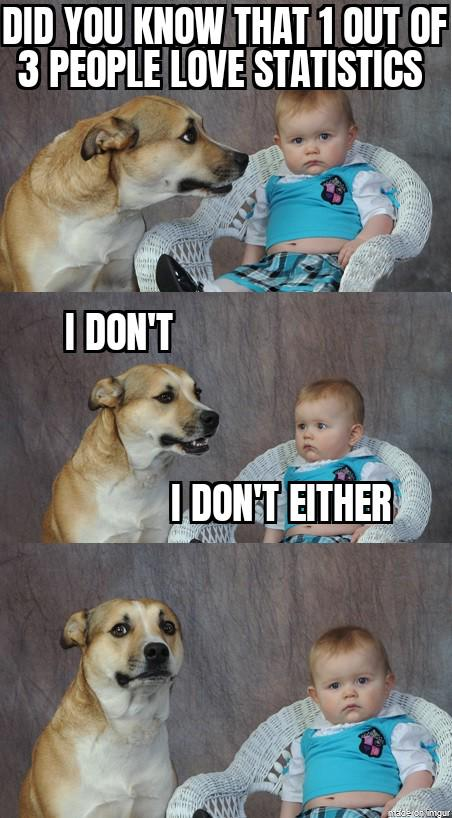

Course Outline
Thinking in Statistics
With Applications in R
Course Description:
This course explores fundamental statistical concepts with applied examples using R. It aims to provide a robust analytical framework to interpret the world quantitatively while appreciating the inherent uncertainties of empirical data.
The course structure would change and chapters would be added as we go along sequentially.
Course Objectives:
By the end of this course, reader will be able to:
Grasp key statistical concepts and differentiate between population parameters and sample statistics.
Use R to conduct data analysis, interpreting the results within the contexts of certainty, probability, and risk.
Critically evaluate how statistical methods model and manage real-world uncertainties.
Communicate statistical findings effectively, acknowledging the limitations and assumptions underlying data interpretations.
Resources:
The
jbstatisticsyoutube channel.Wheelan, C. J. (2014). Naked statistics: Stripping the dread from the data (First published as a Norton paperback). W.W. Norton & Company.
Imai, K. (2017). Quantitative social science: An introduction. Princeton University Press.
Course Format:
Weekly.
Software Requirement:
Install R and RStudio on personal computers.
Weekly Schedule:
Week 1: Introduction to Statistical Thinking
Discussion: The role of statistics in understanding truth and making decisions under uncertainty.
Lab: Introduction to R; installing R and RStudio; basic R commands.
Week 2: Populations and Samples
Discussion: Distinguishing between populations and samples; understanding parameters and statistics.
Lab: Sampling distributions and simulations in R.
Week 3: Descriptive Statistics: Telling Stories with Data
Discussion: Types of Variables - Categorical vs. Quantitative; Levels of Measurement (Nominal, Ordinal, Interval, Ratio).
Lab: Using R to organize and summarize different types of data; visualizing categorical and quantitative data distributions.
Week 4: The Concept of Probability in Statistics
Discussion: Probability as a tool for quantifying uncertainty; basic probability rules.
Lab: Probability experiments and simulations in R.
Week 5: Probability Distributions: Modeling Uncertainty
Discussion: Introduction to key probability distributions (normal, binomial).
Lab: Exploring distributions in R; applications in real-world data.
Week 6: Foundations of Inferential Statistics
Discussion: The logic and philosophy behind inferential statistics; hypothesis testing.
Lab: Performing hypothesis tests in R.
Week 7: Dummy Project with Dataset
Discussion: Review key concepts and techniques.
Lab: Use R for statistical analysis.
Week 8: Estimation: Seeking Truth Through Confidence
Discussion: Confidence intervals as expressions of precision and uncertainty.
Lab: Constructing confidence intervals in R for different parameters.
Week 9: Regression Analysis: Predicting and Explaining
Discussion: Linear regression models as tools for prediction and explanation under conditions of uncertainty.
Lab: Fitting and interpreting regression models in R.
Week 10: Testing Theories with Data
Discussion: Chi-square and ANOVA as methods for testing theoretical predictions against observed data.
Lab: Conducting and interpreting chi-square and ANOVA tests in R.
Week 11: Non-parametric Methods: When Assumptions Fail
Discussion: Introduction to non-parametric tests and their importance in statistics.
Lab: Applying non-parametric tests in R to real data.
Week 12: Causal Inference
Discussion: Potential Outcomes Framework and Directed Acyclic Graphs
Lab: TBD
Week 13: Synthesizing and Communicating Statistical Findings
Discussion: Best practices for synthesizing findings and communicating them to a non-specialist audience.
Lab: Preparing reports and presentations using R Markdown.
Week 14: TBD
Discussion and Lab: TBD.
Lab: TBD
Week 15: Next Steps
Discussion: TBD
Lab: TBD